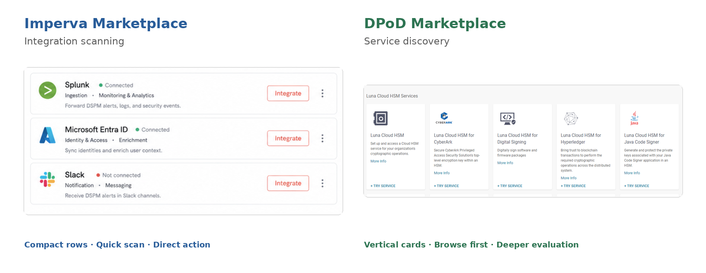

System inconsistency
The workflow already worked, but its components or visual language had diverged from the shared system.
Align with established patterns.
DPoD is Thales’ cloud platform for deploying and managing enterprise cryptographic services. As Thales’ product portfolio evolved, DPoD and other products in the ecosystem had developed different visual languages, components, and interaction patterns.
I led the platform-wide redesign of DPoD using a shared design-system foundation. Rather than treating the work as a visual migration, I determined where DPoD should align with shared patterns, where product-specific experiences should be preserved, and where targeted UX improvements were justified. This case study highlights five representative experiences from the broader redesign.
DPoD had evolved independently from the broader product ecosystem, creating differences across navigation, components, visual hierarchy, and interaction patterns.
Aligning DPoD with the shared system could improve consistency and reduce duplicated design and engineering effort. But DPoD was also a mature enterprise product with established workflows and product-specific needs.
Imperva’s design system provided the shared foundation for the migration, giving us established patterns to evaluate against DPoD’s product context.

How might we align DPoD with a shared design system without losing the product context and workflows that still worked well?
I audited DPoD’s core screens and workflows against the shared Imperva design system to understand what could be reused directly—and where a different response was justified.
The workflow already worked, but its components or visual language had diverged from the shared system.
Align with established patterns.The DPoD pattern served its task better than the available shared pattern.
Preserve the interaction model and extend only when justified.Some familiar patterns had become harder to use or scale as the product evolved.
Use the migration for targeted UX improvement.Product initially scoped the initiative around UI consistency. The audit surfaced a small number of high-value UX issues, so I proposed—and we aligned on—a migration-first approach with targeted improvements rather than a broader redesign.
Align broadly. Improve selectively.These three decisions show how I applied the audit principles in practice—aligning with the shared system when it fit, extending it when product context required more, and improving targeted UX debt.
DECISION 01 · PRESERVE & EXTEND
Imperva’s Marketplace was optimized for quickly scanning and connecting integrations through compact horizontal rows and direct actions. DPoD supported a different task: browsing and evaluating cryptographic services before entering a deeper service experience.
Engineering preferred reusing the existing Imperva pattern to minimize new component variants. I was concerned that optimizing for system consistency would weaken the service-discovery experience DPoD users already relied on.

TRADE-OFF · CONSISTENCY VS TASK FIT
We aligned on preserving DPoD’s vertical browsing model while reusing the shared visual foundations and introducing only the variant the product genuinely needed.

DECISION 02 · ALIGN
DPoD originally configured services inside a modal. As setup became more complex, the shared full-page pattern provided more space, clearer hierarchy, and better orientation through breadcrumbs.
TRADE-OFF · FAMILIARITY VS SCALABILITY
Because consistency and usability pointed in the same direction, we adopted the shared full-page pattern.

DECISION 03 · IMPROVE
Account settings had accumulated inside DPoD’s user menu, making the structure increasingly crowded and difficult to scale. This was one of the targeted UX issues identified during the audit.
TRADE-OFF · MINIMAL CHANGE VS SCALABLE IA
Rather than migrating a structure we already knew would not scale, I moved account settings into a dedicated experience.

ALIGN & PRESERVE
Not every workflow required structural change. For mature areas such as My Services and Service Details, the underlying interaction model already worked well. I preserved those workflows and focused on applying the shared hierarchy, components, spacing, and visual language consistently.


When a workflow exposed a genuine gap, I validated new patterns in product context before formalizing them as extensions to the shared Imperva design system. This kept the library intentional: new variants represented reusable product needs, not one-off screen solutions.

Shared components and variants gave designers a consistent starting point for future workflows.
Consistent specifications reduced repeated implementation work and made design-to-development handoff clearer.
The redesign brought DPoD closer to the broader Thales product language while preserving the workflows and product-specific patterns that continued to serve users well.
User satisfaction improved by 35%, and the system introduced more than 20 reusable components and variants. By reducing repeated design and implementation work, the team projected an efficiency gain of roughly 40% for future product development.